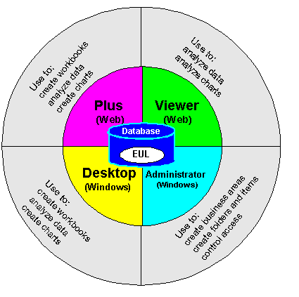
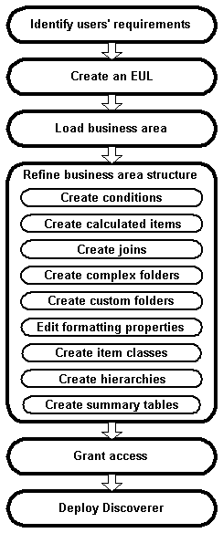

10g (9.0.4)
Part Number B10270-01
Library |
Contents |
Index |
| Oracle Discoverer Administrator Administration Guide (Online Help) 10g (9.0.4) Part Number B10270-01 |
|
This chapter introduces you to Oracle Discoverer Administrator, and includes the following topics:
Oracle Discoverer is a business intelligence toolset that comprises:

All of the Discoverer tools rely on the Discoverer End User Layer (EUL). The EUL is a set of database tables that contain information (or 'metadata') about the other tables and views in the database.
Oracle Discoverer Administrator is one of the components of Oracle Discoverer. Discoverer Administrator is a tool to hide the complexity of the database from business users, so they can answer business questions quickly and accurately using Oracle Discoverer.
Discoverer Administrator's wizard-style interfaces enable you to:
Users of Discoverer Administrator are called Discoverer managers.
Oracle Discoverer Administrator is shipped as part of Oracle Developer Suite, which is a complete suite of application development and administration tools.
As a Discoverer manager, you are responsible for:
To fulfill your role as a Discoverer manager, you need to understand how to design business areas that support your company's decision-makers. On the database side, you need to know what data is in the database, where it is located, how it is stored, and how it relates to other data. On the business side, you need to know what data the decision-makers require, what kinds of analysis is necessary, and how the final results should be presented for easy comprehension.
Before you start using Discoverer Administrator, you will find it helpful to familiarize yourself with some basic concepts:
Business intelligence is the ability to analyze data to answer business questions and predict future trends.
Oracle Discoverer is a great business intelligence tool because it enables users to analyze data in an ad hoc way. Instead of relying on IT specialists to pre-define queries and reports, Discoverer users can choose the data to analyze and can continue manipulating results until they have the necessary information to take business decisions. Oracle Discoverer also enables users to share the results of their data analysis with their colleagues in different formats (including charts and Excel spreadsheets).
A relational database stores data in tables that are composed of rows and columns that contain data values. The overall structure of a relational database management system (RDBMS) can be set up in any number of ways, depending on how the system will be used.
A typical RDBMS is designed for online transaction processing (OLTP), with the main objective of storing vast quantities of transaction data as efficiently as possible. OLTP system design is primarily concerned with getting data into an RDBMS. An OLTP system contains the information that a business uses on a day-to-day basis. The information in an RDBMS designed for an OLTP system is typically process-oriented, current, and subject to change.
A data warehouse is an RDBMS with a structure designed to facilitate data analysis, rather than simply efficient storage of information. Data warehouse design is primarily concerned with getting data out of an RDBMS. The information in a data warehouse is typically subject-oriented, historical, and static.
Oracle Discoverer provides business users with data analysis capabilities, regardless of whether the RDBMS was designed for an OLTP system or as a data warehouse.
Before you design and implement a Discoverer system, you need to become familiar with some fundamental Discoverer concepts.
These fundamental concepts are described briefly in the sections below:
Each of the above sections is only a brief description, but includes a cross-reference to other chapters in this manual where you can find more information.
The End User Layer (EUL) insulates Discoverer end users from the complexity and physical structure of the database. The EUL provides an intuitive, business-focused view of the database that you can tailor to suit each Discoverer end user or user group. The EUL enables Discoverer end users to focus on business issues instead of data access issues. It helps Discoverer end users produce queries by generating SQL and provides a rich set of default settings to aid report building.
The metalayer structure of the EUL preserves the data integrity of the database. Whatever the Discoverer manager or the Discoverer end user does with Discoverer, it affects only the metadata in the EUL and not the database.
The EUL is a collection of approximately 50 tables in the database. These are the only tables that can be modified through Discoverer Administrator. Business areas are defined in Discoverer Administrator using the EUL database tables. Discoverer provides read-only access to the application database.
For more information about the EUL, see Chapter 3, "Creating and maintaining End User Layers".
Typically, no single user (or group of users) is interested in all the information in the database. The users are much more likely to be interested in a subset of the information that is connected in some way to the job that they do. Using Discoverer Administrator, you create one or more business areas as containers of related information.
Having created a business area, you load the database tables containing the related information into that business area.
For more information about business areas, see Chapter 4, "Creating and maintaining business areas".
The tables and views you load into a business area are presented to Discoverer end users as folders. The columns within a table or view are presented as items.
Often the database tables and columns have names that users will not find meaningful. Using Discoverer Administrator, you can make the names of folders and items more helpful than the names of the tables and columns on which they are based.
The folders in a business area do not have to be based directly on database tables or views. You can create complex folders that contain items based on columns from multiple tables or views. You can also create custom folders based on SQL statements you write yourself.
Similarly, the items in a business area do not have to be based directly on columns. You can create calculated items that perform calculations on several columns, or that make use of the analytic functions available within the Oracle database.
For more information about folders and items, see:
Oracle Discoverer end users analyze information by including items in worksheets and using Discoverer's data analysis and charting wizards to find the information they are interested in. Discoverer worksheets are grouped into workbooks. A workbook can be stored on the file system or in the database.
In some cases, you will want to restrict Discoverer end users to analyzing information in worksheets that have been created for them. In other situations, it will be more appropriate to allow end users to create their own worksheets. Discoverer Administrator enables you to decide which end users can create their own workbooks, and which end users can only use workbooks that have been created for them.
For more information about workbooks and worksheets, see the Oracle Application Server Discoverer Plus User's Guide.
Hierarchies are logical relationships between items that enable users to drill up and down to view information in more or less detail. To analyze information effectively, Discoverer end users will want to:
When you load tables into a business area, Discoverer automatically creates default date hierarchies for date items. Often you will want to create your own hierarchies for other items as well.
For more information about hierarchies, see Chapter 12, "Creating and maintaining hierarchies".
Summary folders are a representation of queried data that has been saved for reuse.
You create summary folders with Discoverer Administrator to improve query response time for end users. The response time of a query is improved because the query accesses pre-aggregated and pre-joined data rather than accessing the database tables. You can also direct Discoverer to use summary folders based on tables containing summary data that have been created by another application. These tables are known as external summary tables.
For more information about summary folders, see:
Users' requests for information from the database are in the form of worksheets.
When a user creates or opens a worksheet, Discoverer:
In the case of Discoverer Plus and Discoverer Viewer, the SQL statements are routed to the database via Discoverer processes running on an application server machine.
There are essentially six steps to the implementation of a Discoverer system, as shown in the flowchart below:

These six steps are described in more detail below.
For a Discoverer implementation to be successful, it must meet users' requirements. To find out what those requirements are, conduct interviews with key users and ask them questions like:
As a starting point, why not review the reports and information sources that users are currently using? You will quickly see how using Discoverer will give users both access to the information they currently use and the ability to analyze that information in new and powerful ways.
Remember that users' requirements typically change over time. Often the biggest changes are requested by users when a system has been rolled out. When users see what Discoverer can do for them, they soon have suggestions for other areas where it could be useful.
Try and anticipate changing requirements. After all, a successful system often starts by meeting a subset of requirements and is then modified over time based on user feedback.
An EUL must exist before you can create a business area. If an EUL does not already exist, you must create one.
Having identified users' requirements, you will have a good idea of the information that users need to access. For example, one group of users might want to access sales information, another group might want to access manufacturing information, and so on.
In Discoverer, you group information with a common business purpose into a business area. Having created a business area, you must specify which database tables and views hold that information. You do this by 'loading' the tables and views into the business area.
The default settings and contents of a business area are sufficient to enable users to access and analyze data. However, Discoverer Administrator provides you with a number of features to enhance the default analysis capabilities.
Specifically, you can:
Having identified users' requirements, you will have a good idea of which users (and groups of users) need access to which information.
In some cases, different users will want access to the same information. For example, information about an employee might be required by the employee's manager, payroll staff, and users in the Human Resources department.
In other cases, it is appropriate for only one group of users to have access to the information. For example, information about an engineering project is invaluable for a project manager but of no interest to payroll staff.
Keeping users' information requirements in mind, you can grant users access to the business area.
Note that Discoverer users (whether end users or managers) never compromise the security of the underlying database. Users cannot see information in Discoverer to which they do not already have sufficient database privileges to access. In other words, all Discoverer security and privileges are additional to the database security mechanisms.
Users' requirements will determine which of the Discoverer components you decide to make available in your company.
When identifying their requirements, you will probably have realized that some users want the ability to create their own worksheets, while other users simply want to use worksheets that have been created for them. In addition, some users will want to run Discoverer using a Web browser, using either a Java applet user interface or an HTML user interface.
Use the table below as a guide to decide which Discoverer components to deploy in your organization.
Other factors will probably also influence your decision, including network performance and security issues.
Having decided which Discoverer components to deploy, refer to the appropriate documentation for specific installation or configuration instructions. For more information, see "Related Documents".
Having implemented a Discoverer system, you will probably find that a small amount of ongoing maintenance is required to make sure that Discoverer continues to meet users' requirements.
Typically, you will continue to refine business areas by:
In addition to the above, you will probably have to change which users have access to which business areas and the operations that individual users can perform in those business areas. For example:
For more information, see Chapter 6, "Controlling access to information".
Discoverer Administrator Version 9.0.4 contains the following new and improved features:
|
|
 Copyright © 2003 Oracle Corporation. All Rights Reserved. |
|